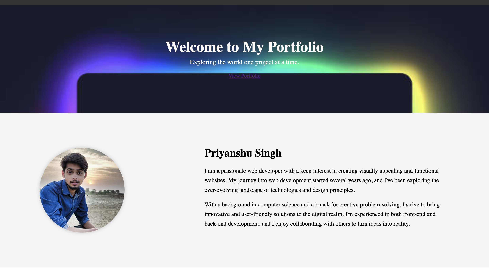

A responsive website showcasing my CSS skills. This project was a part of my journey in learning modern web development techniques. I implemented various layout styles and used CSS animations to enhance user experience. I thoroughly enjoyed working on this project and exploring different CSS techniques to create visually appealing designs. The challenges I encountered during the development process helped me grow as a web developer.
View Project: My Portfolio

An interactive JavaScript application for task management.